축소 배포된 StockTrading2에 필수 API를 복원하고
분석·통계 기능과 Actuator · AOP를 적용한 기록
Day17 (8_6)/StockTrading2localhost:8080/swagger-ui.html · Actuator localhost:8080/actuator
배포받은 StockTrading2는 실습을 위해 상당 부분이 제거된 상태였습니다.
분석 관련 클래스는 주석만 남아 있었습니다.
// StockAnalysisController는 모든 기능이 제거되었습니다.
// 교육생 실습을 위해 이 컨트롤러는 삭제되었습니다.
여기에 필수 API를 복원하고, 분석·통계 기능과 운영 관점의 기능(Actuator · AOP)을 붙이는 것이 이번 과제입니다.
캡처 화면의 포트에 대하여 — 애플리케이션의 기본 포트는 8080이지만,
촬영 당시 호스트의 8080 포트가 다른 프로세스에 점유되어 있어
--server.port=8083으로 실행했습니다.
그래서 화면의 주소가 localhost:8083으로 표시됩니다. 동작에는 차이가 없습니다.
| 기능 | 엔드포인트 | 결과 |
|---|---|---|
| User 전체 조회 | GET /api/users | 200 |
| User 삭제 | DELETE /api/users/{id} | 204 |
| Stock 수정 | PUT /api/stocks/{id} | 200 |
| Stock 삭제 | DELETE /api/stocks/{id} | 204 |
| Stock 코드로 조회 | GET /api/stocks/code/{code} | 200 |
| Transaction 상세 조회 | GET /api/transactions/{id} | 200 읽기 전용 |
| Transaction 매매 실행 | POST /api/transactions/trade | 201 |
| Portfolio 특정 주식 | GET /api/portfolios/user/{userId}/stock/{stockId} | 200 |
| 번호 | 기능 | 엔드포인트 | 구현 |
|---|---|---|---|
| ① | 포트폴리오 평가 손익 | GET /api/analysis/portfolio/{userId} | JPA |
| ② | 거래 내역 상세 | GET /api/analysis/transactions/{userId} | JPA |
| ③ | 특정 주식 거래 내역 | GET /api/analysis/transactions/{userId}/stock/{stockId} | JPA |
| ④ | 총 자산 조회 | GET /api/analysis/assets/{userId} | MyBatis |
| ⑤ | 총 수익률 조회 | GET /api/analysis/return-rate/{userId} | MyBatis |
| ⑥ | 거래 통계 조회 | GET /api/analysis/statistics/{userId} | MyBatis |
| ⑦ | 일별 거래 내역 | GET /api/analysis/daily/{userId} | MyBatis |
| ⑧ | 거래 감사 로그 (AOP 결과 확인용) | GET /api/analysis/audit/{userId} | JPA |
Transaction 쪽 "특정 주식 거래 내역"도 별도로 두어
GET /api/transactions/user/{userId}/stock/{stockId}로 접근할 수 있게 했습니다.
| 항목 | 적용 내용 |
|---|---|
| Actuator | health(하위 구성요소 포함) · info · metrics 등 7종 노출 |
| AOP | ① 서비스 실행 시간 측정 ② 거래 감사 로그 기록(별도 트랜잭션) |
src/main/java/com/skala/stock/ ├─ aop/ ← 신규 패키지 │ ├─ ExecutionTimeAspect.java 서비스 실행 시간 측정 │ └─ TradeAuditAspect.java 거래 감사 로그 ├─ exception/ ← 신규 패키지 │ ├─ GlobalExceptionHandler.java │ ├─ ResourceNotFoundException.java (404) │ ├─ DuplicateResourceException.java (409) │ ├─ ResourceInUseException.java (409) │ └─ BusinessRuleException.java (400) ├─ controller/ StockAnalysisController ← 복원(8개) · 나머지 3개 확장 ├─ service/ StockAnalysisService ← 복원 │ TradeAuditRecorder.java ← 신규(REQUIRES_NEW 저장) ├─ mapper/ StockMapper.java ← 복원(집계 쿼리 5종) │ DailyTradeDto.java ← 신규 └─ dto/ AssetSummaryDto.java ← 신규 ReturnRateDto.java ← 신규 ErrorResponse.java ← 신규 src/main/resources/ ├─ mapper/StockMapper.xml ← 복원(집계 SQL) └─ application.yml ← Actuator 설정 build.gradle ← actuator · aop 의존성
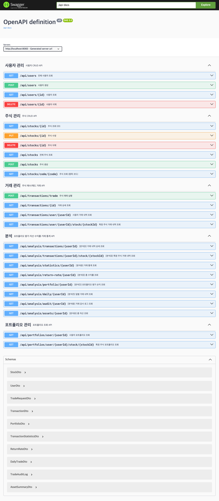
id는 DB가 부여한 값이라 외부에서 알기 어렵습니다.
종목 코드 005930은 사용자가 아는 값이므로 별도 조회 경로를 두었습니다.
주소 설계 — /api/stocks/{id}가 이미 한 칸짜리 경로를 차지하고 있어
/api/stocks/{code}로 만들면 충돌합니다. /code/를 한 단계 더 두어
두 칸짜리 경로로 분리했습니다.
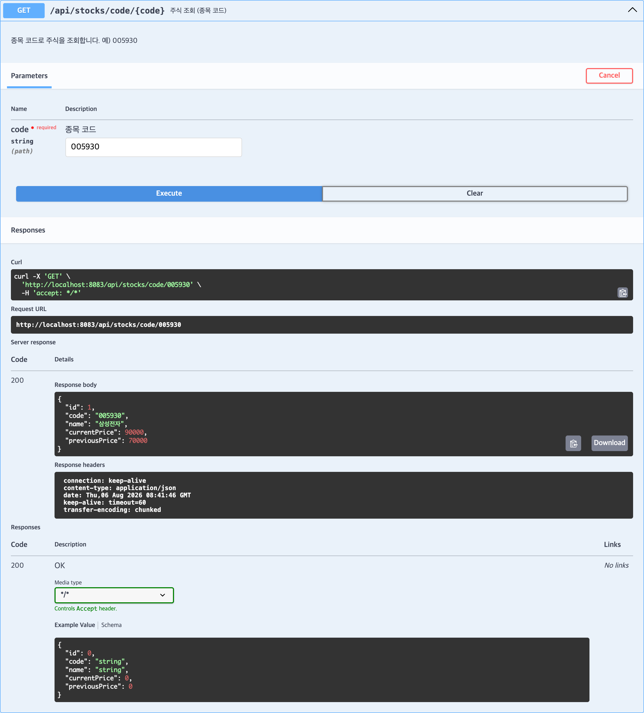
GET /api/stocks/code/005930 — 종목 코드로 삼성전자 조회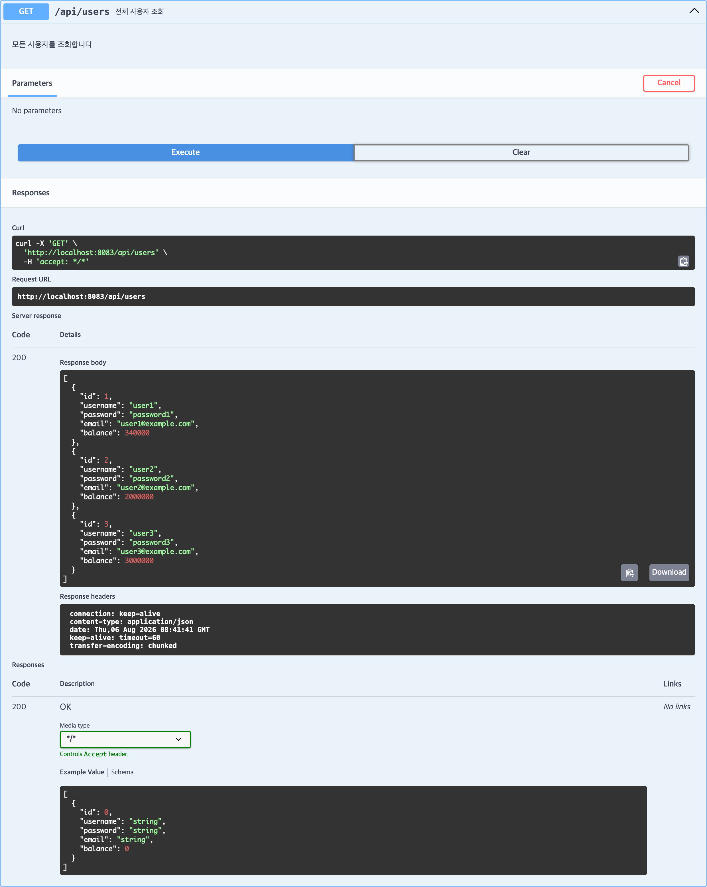
GET /api/users — 전체 사용자 조회종목 코드에는 unique 제약이 있습니다. 수정할 때 다른 종목이 쓰는 코드로는
바꿀 수 없지만, 자기가 쓰던 코드를 그대로 보내는 것은 허용해야 합니다.
그래서 "코드가 바뀌었는지"를 먼저 확인합니다.
@Transactional public StockDto updateStock(Long id, StockDto stockDto) { Stock stock = findStockOrThrow(id); if (!stock.getCode().equals(stockDto.getCode()) && stockRepository.existsByCode(stockDto.getCode())) { throw new DuplicateResourceException("이미 존재하는 종목 코드입니다: " + stockDto.getCode()); } stock.setCode(stockDto.getCode()); stock.setName(stockDto.getName()); stock.setCurrentPrice(stockDto.getCurrentPrice()); stock.setPreviousPrice(stockDto.getPreviousPrice()); return convertToDto(stockRepository.save(stock)); }
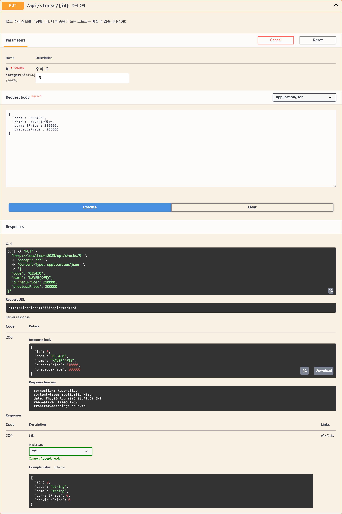
PUT /api/stocks/3 — NAVER 종목명·현재가 수정, 200 OKportfolios와 transactions가 user_id·stock_id를
NOT NULL 외래키로 참조합니다. 참조가 남은 채 삭제하면 무결성 제약에 걸려
500이 납니다. 사용자 입장에서는 "서버가 고장났다"로 보이지만
실제로는 요청이 잘못된 것이므로, 미리 확인해 409와 이유를 돌려줍니다.
@Transactional public void deleteStock(Long id) { Stock stock = findStockOrThrow(id); if (portfolioRepository.existsByStockId(id)) { throw new ResourceInUseException("보유 중인 포트폴리오가 있어 삭제할 수 없습니다: " + stock.getCode()); } if (transactionRepository.existsByStockId(id)) { throw new ResourceInUseException("거래 내역이 있어 삭제할 수 없습니다: " + stock.getCode()); } stockRepository.delete(stock); }
거래 내역은 함께 지우지 않았습니다. 포트폴리오는 현재 상태라 지워도 되지만, 거래 내역은 "언제 무엇을 얼마에 샀다"는 기록입니다. 사용자를 지운다고 함께 없애면 안 된다고 판단해 삭제를 거절합니다.
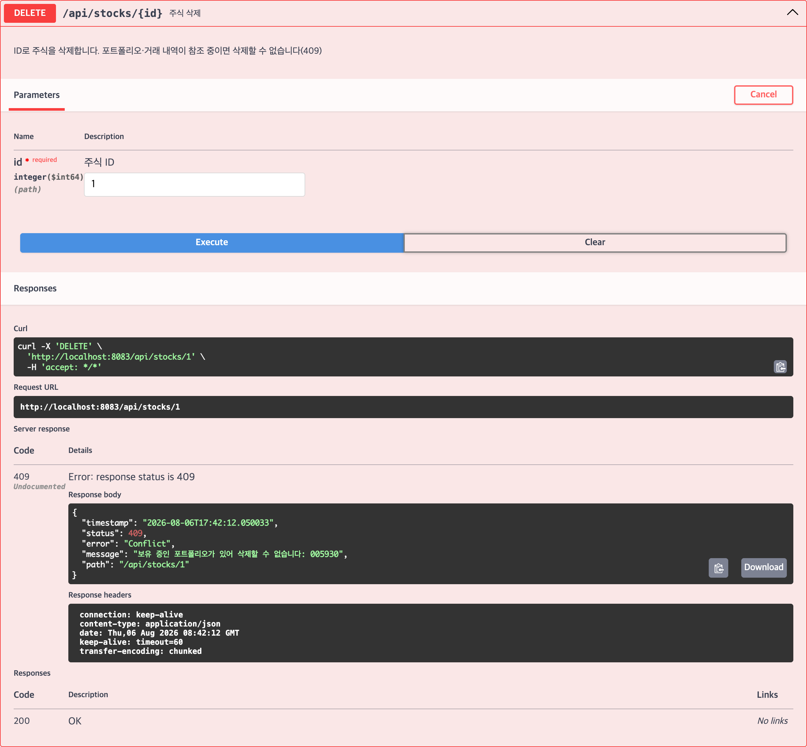
DELETE /api/stocks/1 — 보유·거래 기록이 있는 종목은 409 Conflict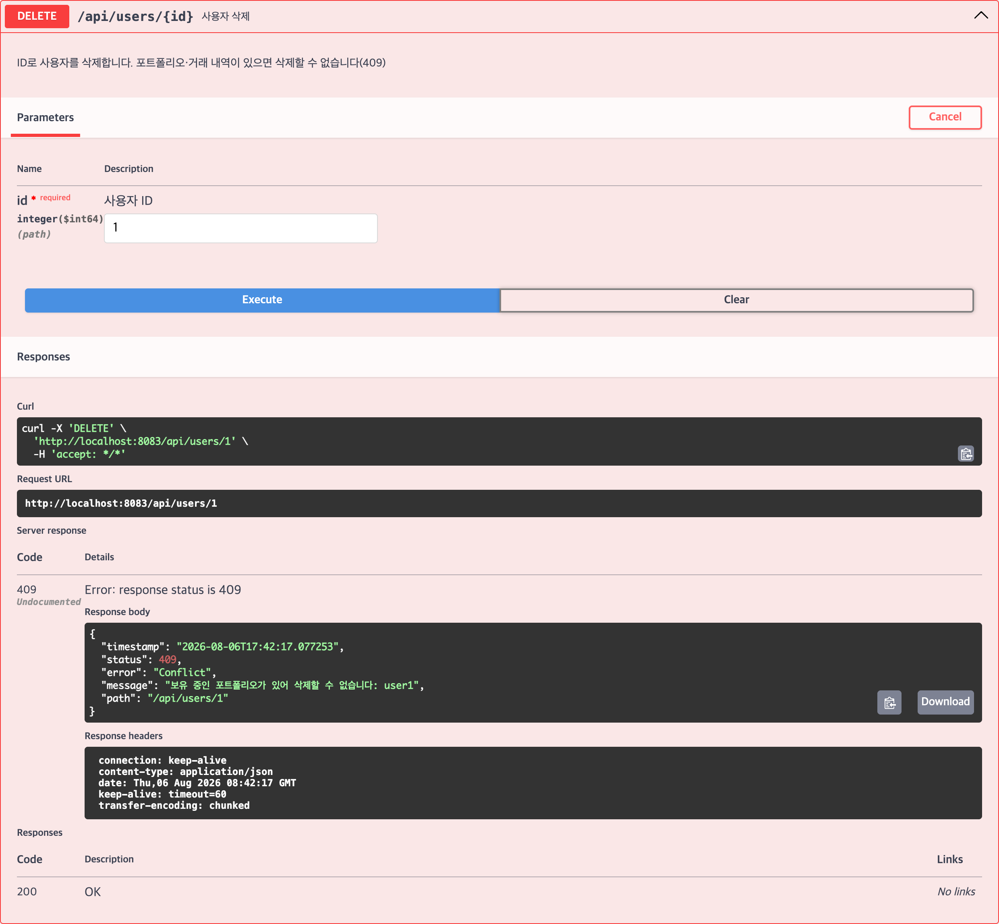
DELETE /api/users/1 — 포트폴리오를 보유한 사용자도 409매매 한 번에 세 가지가 함께 바뀝니다.
중간에 실패하면 셋 다 함께 되돌아가야 하므로 @Transactional로 묶었습니다.
@Transactional public TransactionDto executeTrade(TradeRequestDto request) { User user = userRepository.findById(request.getUserId()) .orElseThrow(() -> ResourceNotFoundException.of("사용자", request.getUserId())); Stock stock = stockRepository.findById(request.getStockId()) .orElseThrow(() -> ResourceNotFoundException.of("주식", request.getStockId())); long price = stock.getCurrentPrice(); long totalAmount = price * request.getQuantity(); if (request.getType() == Transaction.TransactionType.BUY) { buy(user, stock, request.getQuantity(), price, totalAmount); } else { sell(user, stock, request.getQuantity(), totalAmount); } Transaction transaction = transactionRepository.save(Transaction.builder() .user(user).stock(stock).type(request.getType()) .quantity(request.getQuantity()).price(price).totalAmount(totalAmount) .transactionDate(LocalDateTime.now()).build()); return convertToDto(transaction); }
같은 종목을 여러 번 사면 평균 매수가를 다시 계산해야 합니다.
// 새 평균가 = (기존 평가액 + 이번 매수액) / (기존 수량 + 이번 수량) long beforeAmount = portfolio.getQuantity() * portfolio.getAveragePrice(); long addedAmount = quantity * price; long totalQuantity = portfolio.getQuantity() + quantity; portfolio.setAveragePrice((beforeAmount + addedAmount) / totalQuantity); portfolio.setQuantity(totalQuantity);
매도는 평균가를 바꾸지 않습니다. 파는 것은 이미 산 것의 일부를 넘기는 일이라 "얼마에 샀는지"는 변하지 않기 때문입니다. 수량만 줄이고, 0이 되면 보유 목록에서 제거합니다.
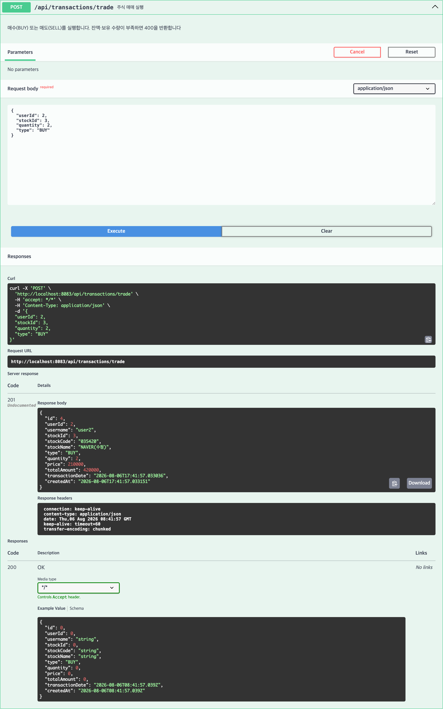
POST /api/transactions/trade — NAVER 2주 매수, 201 Created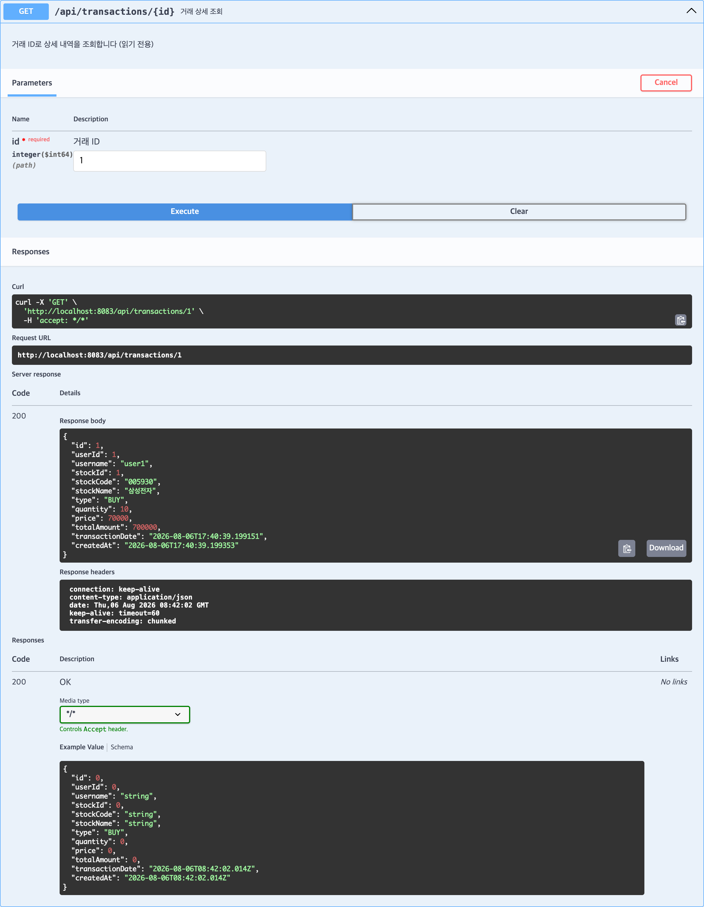
GET /api/transactions/1 — 거래 상세 조회(읽기 전용). 사용자·종목 정보가 함께 조회됨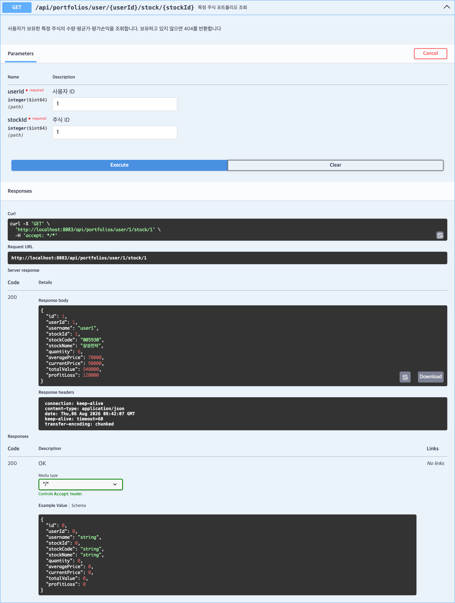
GET /api/portfolios/user/1/stock/1 — 보유 6주 · 평균가 70,000 · 현재가 90,000 · 평가손익 +120,000같은 데이터라도 "무엇을 묻느냐"에 따라 도구를 나눴습니다.
| 도구 | 쓰는 곳 | 이유 |
|---|---|---|
| JPA | 엔티티 단위 조회 · CRUD | 객체로 다루는 것이 자연스럽고, 연관관계 탐색이 쉽다 |
| MyBatis | GROUP BY · CASE WHEN 집계 |
SQL을 직접 쓰는 편이 읽기 쉽고 의도가 분명하다 |
-- 종목별 매수/매도 집계: CASE WHEN 으로 한 번의 스캔에서 둘 다 더한다
SELECT
s.code AS stock_code,
s.name AS stock_name,
COALESCE(SUM(CASE WHEN t.type = 'BUY' THEN t.quantity ELSE 0 END), 0) AS total_buy_quantity,
COALESCE(SUM(CASE WHEN t.type = 'SELL' THEN t.quantity ELSE 0 END), 0) AS total_sell_quantity,
COALESCE(SUM(CASE WHEN t.type = 'BUY' THEN t.quantity ELSE -t.quantity END), 0) AS net_quantity,
...
FROM transactions t
JOIN stocks s ON s.id = t.stock_id
WHERE t.user_id = #{userId}
GROUP BY s.code, s.name
application.yml에 map-underscore-to-camel-case: true가 있어
stock_code → stockCode로 자동 매핑됩니다.
DTO 필드명과 SQL 별칭을 각각의 관례대로 쓸 수 있습니다.
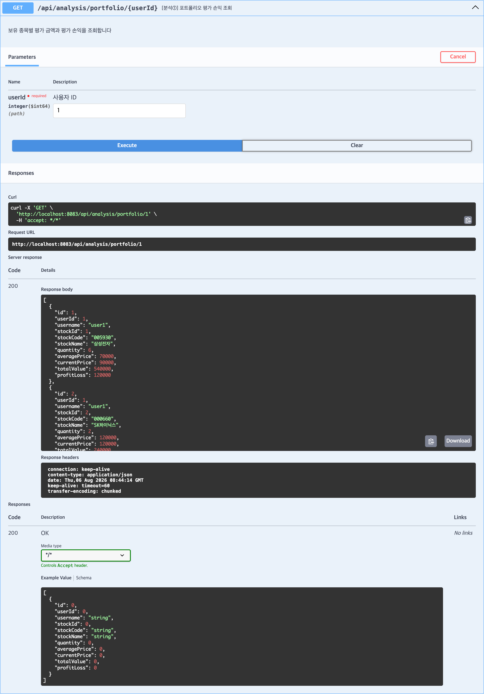
총 자산은 현금 + 보유 주식 평가액입니다. 평가액과 원가 합계는 MyBatis 집계로 구합니다.
long holdingValue = nullToZero(stockMapper.selectHoldingValue(userId)); // 수량 × 현재가 long holdingCost = nullToZero(stockMapper.selectHoldingCost(userId)); // 수량 × 평균 매수가 long profit = holdingValue - holdingCost; // 보유 주식이 없으면 원가가 0이라 나눌 수 없으므로 0%로 본다 double rate = (holdingCost == 0) ? 0.0 : Math.round((profit * 10000.0) / holdingCost) / 100.0; // 소수 둘째 자리
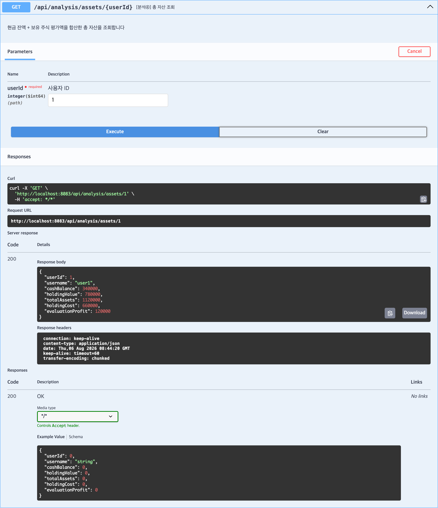
GET /api/analysis/assets/1 — 현금 340,000 + 평가 780,000 = 총 자산 1,120,000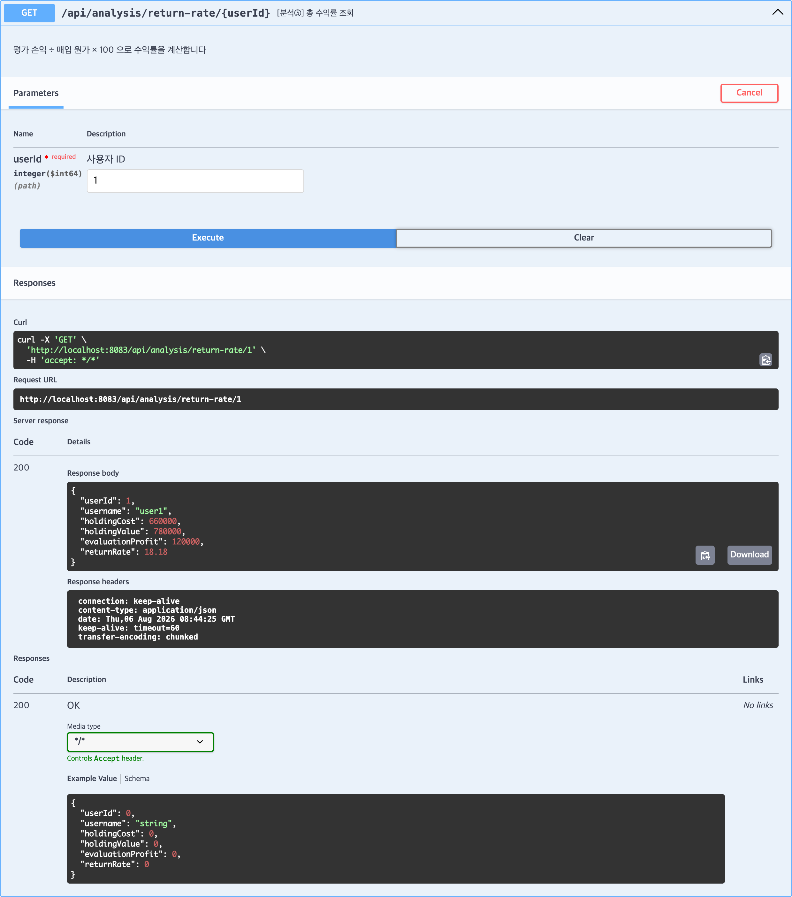
GET /api/analysis/return-rate/1 — 원가 660,000 → 평가 780,000, 수익률 18.18%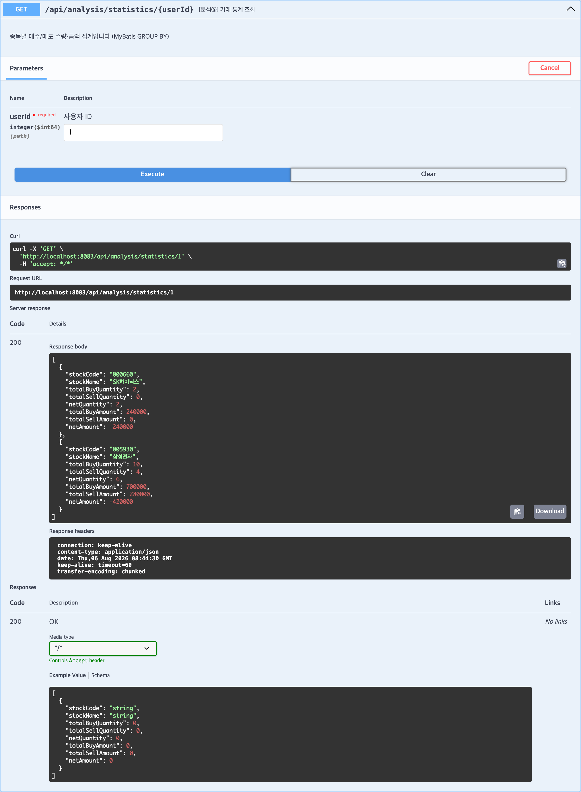
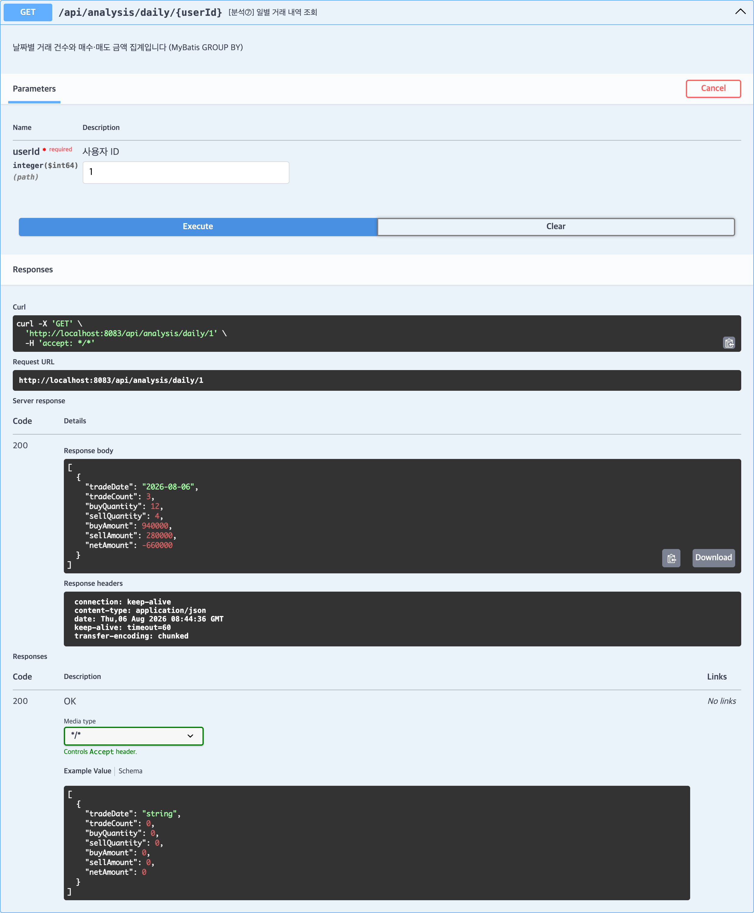
FORMATDATETIME으로 날짜만 잘라 GROUP BY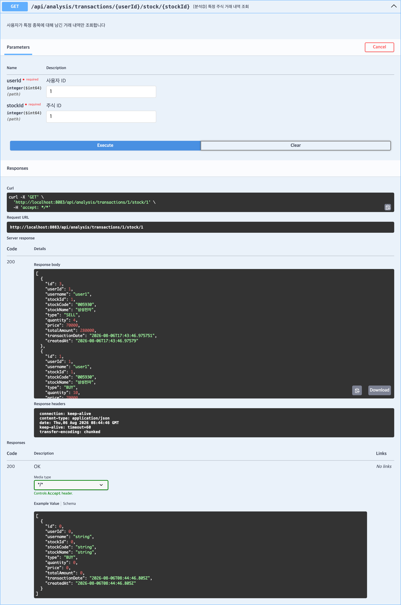
/api/analysis/transactions/1/stock/1 — 삼성전자 매수·매도 내역만 필터두 가지를 적용했습니다. 둘 다 업무 로직과는 무관하지만 여러 곳에 필요한 일입니다.
실행 시간 측정은 모든 서비스 메서드에 필요하지만 업무 로직과는 상관없습니다. 메서드마다 시간 측정 코드를 넣으면 본래 코드가 묻히고, 빠뜨린 메서드가 생깁니다. 한 곳에 모아 두면 서비스 코드는 깨끗해지고 적용 범위도 포인트컷 한 줄로 관리됩니다.
@Pointcut("execution(public * com.skala.stock.service..*(..))") public void serviceMethods() { } @Around("serviceMethods()") public Object measure(ProceedingJoinPoint joinPoint) throws Throwable { long start = System.nanoTime(); try { return joinPoint.proceed(); } finally { long elapsedMs = (System.nanoTime() - start) / 1_000_000; if (elapsedMs >= SLOW_THRESHOLD_MS) { log.warn("[AOP] {} 실행 {}ms — 느림", target, elapsedMs); } else { log.info("[AOP] {} 실행 {}ms", target, elapsedMs); } } }
finally에 둔 이유는 예외가 나도 시간이 기록되어야 하기 때문입니다.
느린 호출(100ms 이상)은 WARN으로 올려 눈에 띄게 했습니다.
"거래를 기록한다"는 요구는 매매 로직 자체와 별개입니다.
executeTrade() 안에 감사 코드를 넣으면 잔액 계산·포트폴리오 갱신 같은
본래 관심사와 섞입니다. 분리하면 매매 로직은 매매만 다루고, 감사 정책이 바뀌어도
이 클래스만 고치면 됩니다.
@AfterReturning(pointcut = "execution(* ...TransactionService.executeTrade(..)) && args(request)", returning = "result", argNames = "request,result") public void logSuccess(TradeRequestDto request, TransactionDto result) { ... } @AfterThrowing(pointcut = "execution(* ...TransactionService.executeTrade(..)) && args(request)", throwing = "ex", argNames = "request,ex") public void logFailure(TradeRequestDto request, Throwable ex) { ... }
여기서 두 번 막혔습니다.
1) 자기 호출 문제 — 처음에는 Aspect 안에 @Transactional 메서드를 두고
같은 클래스에서 호출했습니다. 이러면 프록시를 거치지 않아
REQUIRES_NEW가 적용되지 않습니다. 저장 로직을 별도 빈
(TradeAuditRecorder)으로 분리해 해결했습니다.
2) 실행 순서 — Aspect가 트랜잭션 어드바이저보다 안쪽에서 돌면
거래 트랜잭션이 아직 살아 있는 상태에서 로그를 남기게 됩니다.
@Order(0)을 붙여 트랜잭션보다 바깥에 두었습니다.
실패한 거래(잔액 부족 등)도 "시도했다"는 사실은 남아야 합니다. 거래 트랜잭션에 얹으면 롤백될 때 로그까지 함께 사라집니다.
@Transactional(propagation = Propagation.REQUIRES_NEW) public void record(Long userId, Long stockId, TransactionType type, String message) { TradeSnapshotDto snapshot = stockMapper.selectTradeSnapshot(userId); auditLogRepository.save(TradeAuditLog.builder() .userId(userId).stockId(stockId).type(type).message(cut(message)) .totalAssets(snapshot.getTotalAssets()) // 그 시점 총 자산 .totalReturnRate(snapshot.getTotalReturnRate()) // 그 시점 수익률 .build()); }
처음에는 메시지만 남겼는데, 배포본의 TradeAuditLog 엔티티에는
total_assets · total_return_rate 컬럼이 있고
TradeSnapshotDto도 함께 제공되어 있었습니다.
"이 거래 직후 자산이 얼마였는지"를 남기라는 뜻으로 읽혀 스냅샷을 함께 저장하도록 했습니다.
로그만 보고도 그 시점 상태를 알 수 있어야 감사 기록으로서 쓸모가 있기 때문입니다.
-- 총 자산·수익률을 한 번의 쿼리로 (MyBatis)
SELECT u.id AS user_id,
u.balance + COALESCE(hv.holding_value, 0) AS total_assets,
CASE WHEN COALESCE(hc.holding_cost, 0) = 0 THEN 0
ELSE ROUND((COALESCE(hv.holding_value, 0) - hc.holding_cost) * 100.0
/ hc.holding_cost, 2)
END AS total_return_rate
FROM users u
LEFT JOIN ( ... 보유 평가액 ... ) hv ON hv.user_id = u.id
LEFT JOIN ( ... 매입 원가 ... ) hc ON hc.user_id = u.id
WHERE u.id = #{userId}
거래 시점의 수익률이 0.0%인 것은 정상입니다.
방금 산 주식은 현재가와 평균 매수가가 같아 아직 손익이 없기 때문입니다.
이후 주가가 오르면 분석 API(/api/analysis/return-rate)가 그 변화를 반영합니다.
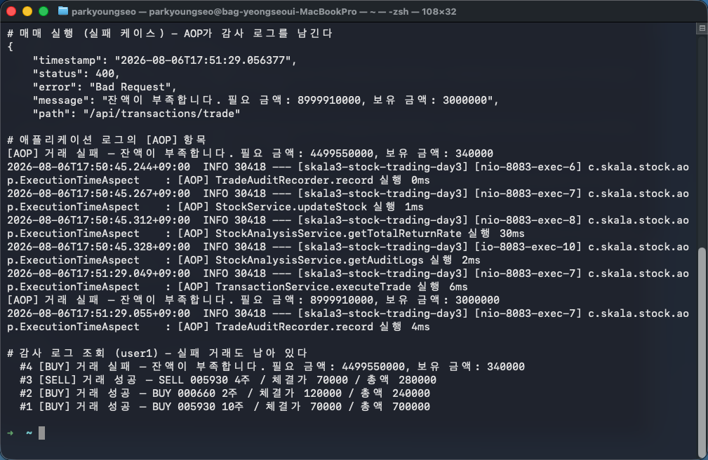
[AOP] 로그가 남고, 감사 로그에 실패 기록 #4가 보존됨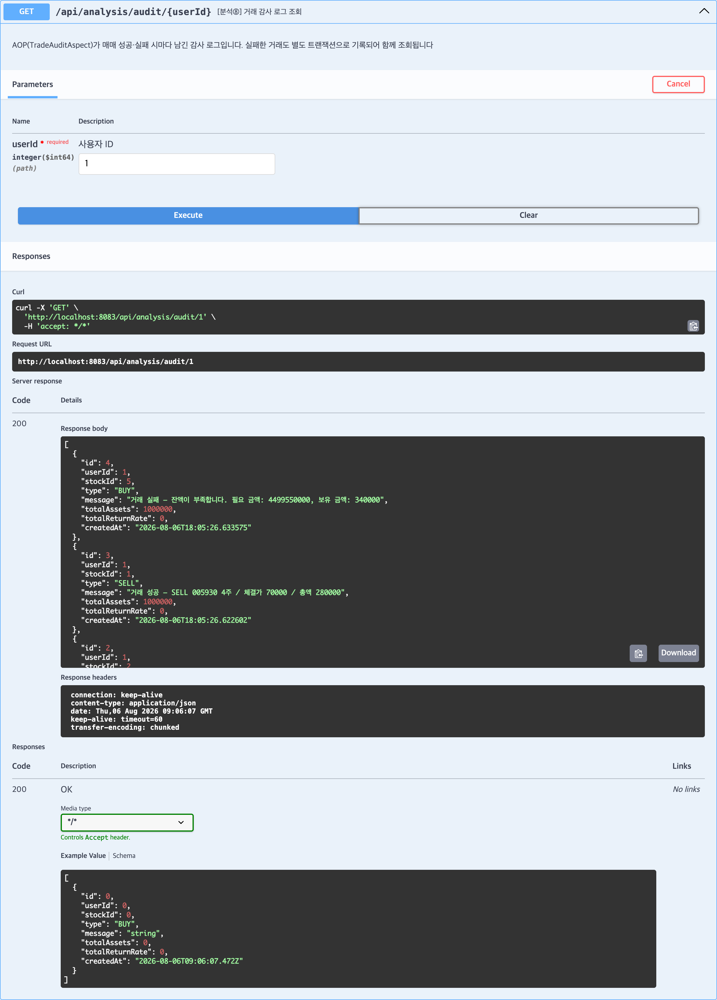
GET /api/analysis/audit/1 — 성공 3건과 실패 1건이 함께 조회됨의존성을 추가하고 필요한 엔드포인트를 열었습니다. 기본값은 health 하나만 노출됩니다.
# application.yml management: endpoints: web: exposure: include: health, info, metrics, env, beans, mappings endpoint: health: show-details: always # 디스크·DB 등 하위 구성요소 상태까지 표시 info: app: name: SKALA Stock Trading API (Day17) description: 주식 거래 분석 API — JPA + MyBatis · AOP · Actuator
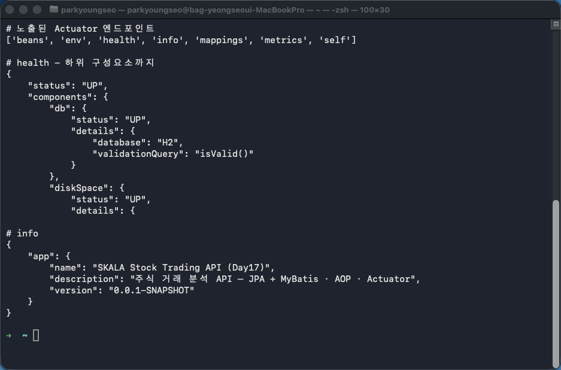
health 하위 구성요소(db · diskSpace · ping) · info/actuator/mappings로는 실제 등록된 URL 매핑을 확인할 수 있어,
이번처럼 엔드포인트를 대량으로 추가했을 때 누락 여부를 점검하기 좋았습니다.
배포본에는 전역 예외 처리기가 없어 서비스가 던진 예외가 전부
500으로 나갔습니다. 예외 타입을 나누고
@RestControllerAdvice에서 상태 코드로 매핑했습니다.
| 상황 | 예외 | 상태 코드 |
|---|---|---|
| 입력값 검증 실패 | MethodArgumentNotValid | 400 |
| 경로 변수 제약 위반 | ConstraintViolation | 400 |
| 타입 불일치 · 깨진 JSON | TypeMismatch 등 | 400 |
| 잔액 · 수량 부족 | BusinessRuleException | 400 |
| 자원 없음 | ResourceNotFoundException | 404 |
| 없는 경로 · 미지원 메서드 | NoResourceFound 등 | 404 / 405 |
| 중복 · 참조 중 삭제 | Duplicate · ResourceInUse | 409 |
경로 변수 제약은 클래스에 @Validated가 있어야 동작합니다.
컨트롤러 5곳 모두에 적용해 앱 전체에서 같은 방식으로 걸러지게 했습니다.
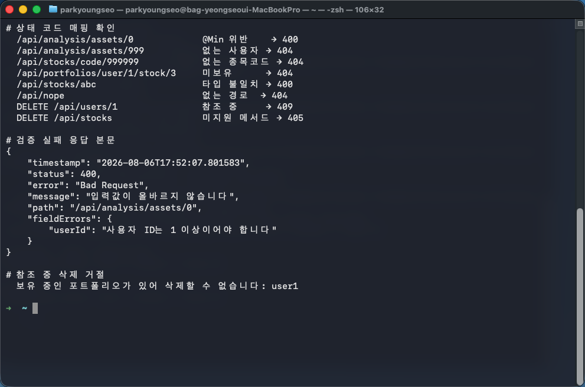
fieldErrors에 필드별 사유 · 참조 중 삭제 거절| 검증 항목 | 기대 | 결과 |
|---|---|---|
| 필수 API 8종 (조회 · 수정 · 삭제 · 매매) | 200/201/204 | 통과 |
| 분석 API 8종 | 200 | 통과 |
| 참조 중인 주식 · 사용자 삭제 | 409 | 409 |
| 잔액 초과 매수 | 400 | 400 |
경로 변수 @Min 위반 · 타입 불일치 | 400 | 400 |
| 없는 사용자 · 종목 · 미보유 주식 | 404 | 404 |
| 없는 경로 · 미지원 메서드 | 404 / 405 | 404 / 405 |
| 총 자산 · 수익률 계산 정확도 | 수식 일치 | 일치 |
| AOP 실행 시간 로그 | 전 서비스 | 기록됨 |
| AOP 감사 로그 (실패 거래 보존) | 롤백 무관 | 보존됨 |
/actuator/health | 200 UP | UP |
초기 잔액 1,000,000
BUY 삼성전자 10주 @70,000 -700,000 → 300,000
BUY SK하이닉스 2주 @120,000 -240,000 → 60,000
SELL 삼성전자 4주 @70,000 +280,000 → 340,000 ← 현금 잔액
보유: 삼성전자 6주 @70,000 = 420,000 (현재가 90,000 → 540,000)
SK하이닉스 2주 @120,000 = 240,000 (현재가 120,000 → 240,000)
매입 원가 660,000 / 평가액 780,000 → 평가 손익 +120,000
총 자산 = 340,000 + 780,000 = 1,120,000 ✓ API 응답과 일치
수익률 = 120,000 / 660,000 × 100 = 18.18% ✓ API 응답과 일치
@Order로 명시하지 않으면 의도와 다른 시점에 실행될 수 있다.@Transactional 메서드를 불러도 전파 속성이 적용되지 않는다.
별도 빈으로 분리해야 한다.REQUIRES_NEW로 분리하는 이유가 여기 있다.UserDto가 응답에 비밀번호를 그대로 포함한다.
요청용·응답용 DTO를 분리하거나 @JsonProperty(access = WRITE_ONLY)가 필요하다.Long으로 다루고 있어 소수점 단위 가격에는 맞지 않는다.
금액은 BigDecimal이 안전하다.@Version)을 고려할 수 있다.